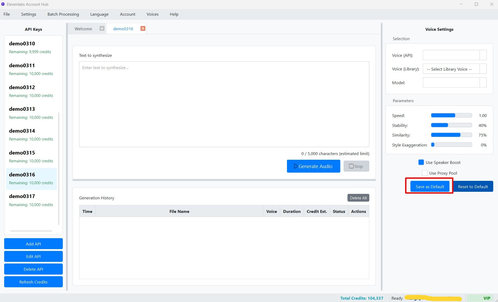

Lưu Hồ sơ Cài đặt TTS (Profile)
Sau khi bạn đã dành thời gian tùy chỉnh các tham số TTS (như lựa chọn Giọng nói, Mô hình, điều chỉnh Tốc độ, Độ ổn định, Độ tương đồng, Kiểu cách, và các tùy chọn Speaker Boost/Proxy Pool) và tìm được một bộ cài đặt mà bạn hài lòng cho một Khóa API cụ thể, bạn có thể lưu những cài đặt này thành một "hồ sơ" (profile) mặc định cho Khóa API đó.
Việc này rất hữu ích vì nó giúp bạn tiết kiệm thời gian không phải thiết lập lại toàn bộ các tham số mỗi khi bạn chọn lại Khóa API đó để sử dụng trong tương lai.
Cách Lưu Hồ sơ Cài đặt
- Chọn Khóa API và Mở Tab TTS: Đảm bảo bạn đang ở trong tab TTS của Khóa API mà bạn muốn tạo hoặc cập nhật hồ sơ cài đặt (Cột Giữa).
- Tùy chỉnh Cài đặt: Trong Bảng Cài đặt (Settings Panel ở Cột Phải), hãy điều chỉnh tất cả các tùy chọn theo ý muốn của bạn:
- Chọn Giọng nói (Voice) hoặc Library Voice.
- Chọn Mô hình (Model).
- Điều chỉnh các thanh trượt: Tốc độ (Speed), Độ ổn định (Stability), Độ tương đồng (Similarity Boost), Kiểu cách (Style).
- Đánh dấu hoặc bỏ đánh dấu các ô: Use Speaker Boost, Use Proxy Pool.
- Lưu Hồ sơ: Khi bạn đã hài lòng với bộ cài đặt hiện tại trong Bảng Cài đặt, nhấn nút "Lưu Cài đặt" (Save Settings) nằm ở phía dưới cùng của Bảng Cài đặt.  (Hình ảnh: Nút "Lưu Cài đặt" trong Bảng Cài đặt)
- Xác nhận: Một thông báo sẽ xuất hiện trên Thanh Trạng thái (Status Bar) ở dưới cùng cửa sổ chính, xác nhận rằng hồ sơ cho Khóa API hiện tại đã được lưu thành công. Ví dụ: "Default profile for 'Ten_Khoa_API' saved successfully."
Cách Hồ sơ Cài đặt được Sử dụng
- Tự động Tải khi Chọn Khóa API: Mỗi khi bạn chọn một Khóa API từ danh sách ở Cột Trái, nếu Khóa API đó đã có một hồ sơ cài đặt được lưu trước đó, các cài đặt trong hồ sơ đó sẽ tự động được tải và áp dụng vào các điều khiển trong Bảng Cài đặt (Cột Phải). Điều này giúp bạn nhanh chóng có được bộ cài đặt ưa thích cho khóa đó.
- Reset về Hồ sơ Đã lưu:
- Nếu bạn đã thay đổi các cài đặt trong Bảng Cài đặt (ví dụ, để thử nghiệm một cấu hình mới) nhưng sau đó muốn quay lại các cài đặt đã được lưu trong hồ sơ mặc định của Khóa API hiện tại, bạn có thể nhấn nút "Reset Cài đặt" (Reset Settings) trong Bảng Cài đặt.
- Thao tác này sẽ tải lại các giá trị từ hồ sơ đã lưu vào các ô lựa chọn và thanh trượt, khôi phục lại trạng thái cài đặt đã lưu trước đó của bạn cho Khóa API này.
Lưu ý Quan trọng về Hồ sơ Cài đặt
- Mỗi Khóa API có một Hồ sơ Riêng: Hồ sơ cài đặt TTS là độc lập cho từng Khóa API. Việc lưu hồ sơ cho một Khóa API sẽ không ảnh hưởng đến hồ sơ của các Khóa API khác.
- Ghi đè Hồ sơ Cũ: Nếu bạn nhấn nút "Lưu Cài đặt" nhiều lần cho cùng một Khóa API, các cài đặt mới nhất tại thời điểm nhấn nút sẽ ghi đè lên hồ sơ đã được lưu trước đó cho Khóa API đó. Không có lịch sử phiên bản cho hồ sơ.
- Cài đặt Mặc định Ban đầu khi Thêm Khóa Mới: Khi bạn thêm một Khóa API mới vào phần mềm, một hồ sơ với các giá trị cài đặt TTS mặc định của ứng dụng (ví dụ: giọng nói Adam, mô hình Multilingual v2, các tham số ở mức trung bình) sẽ tự động được tạo và liên kết với Khóa API mới đó. Bạn có thể tùy chỉnh và lưu lại hồ sơ này theo ý thích của mình ngay sau đó.
Mẹo: Hãy thử nghiệm và lưu lại các bộ cài đặt khác nhau cho các mục đích hoặc các loại giọng nói khác nhau mà bạn thường xuyên sử dụng với từng Khóa API. Ví dụ, bạn có thể có một hồ sơ với giọng nam trầm cho việc đọc truyện, và một hồ sơ khác với giọng nữ cao, nhanh cho việc thông báo, tất cả đều được lưu riêng cho từng Khóa API.